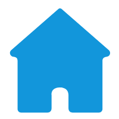

我的简历my cv
 个人信息（Personal Info）
个人信息（Personal Info）
- 姓 名：肖鹏飞
- 出生年月：1996.03
- 民 族：汉
- 身 高：172cm
- 电 话：13638422132
- 政治面貌：中共团员
- 邮 箱：1109614355@qq.com
- 毕业学校：湖南科技大学
- 住 址：湖南省湘潭市雨湖区
- 学 历：本科

 教育背景（Eduction）
教育背景（Eduction）
2014.09 - 至今
湖南科技大学
信息安全
主修课程：
主修c语言，面向对象编程c++，java，安卓开发，操作系统，数据库，计算机网络，数据结构，软件工程，软件测试，Internet web等。
实习经历（Intership）
2017.06 - 2017.08
湖南阿茨特网络科技有限公司
web前端
- 项目大体为微信网上商城开发，主要由两人负责，我负责所有前端页面的呈现；
- 主要用到的是vue.js框架，vue-cli脚手架，webpack打包工具，以及git，github。
- 主要模块：商品列表展示页，商品详情页，购物车页，订单支付页，个人中心，收货地址管理，物流详情，订单的四种状态（未支付，已支付，待收货，已收货），后台管理及其相关功能。
- 主要用到的插件：vue-area（地址省市区选择插件），echarts（后台销量数据的折线或圆柱图展示），vue-toast（用户操作的提示），上拉刷新下拉加载，轮播图等，以及一些特定要求自己编写的插件。
- 由于团队给力，气氛活跃，总的来说开发十分顺利，提前完成了任务
2017.11 - 2018.03
湖北金拓维信息技术有限公司
web前端
- 主要参与一些PC端系统的开发。
- 在此期间，是非常快上手项目的实习生，也分担了大型系统构建的任务。
- 主要负责方面：开发前期配置文件的编写，界面的构建，大型文件树结构的构建（如：多级文件树的增删改查，以及预览上传等），参与过界面的调整讨论，JQ框架Easyui的使用，以及修改他人代码的BUG等。
- 实习空余期间，也开始补充新的知识，如node等。
2018.03 - 2018.03
web前端
- 在闲暇期间，把之前对Node的向往之情，得到了实现，由于刚入坑这方面，app做的还比较粗糙，差不多就是搭通了下前后端，后期会进行功能的完善。
- 类似于论坛的app。
- 主要用了：vue，nodejs，nginx，mongodb等。(还有待后期更加深入的学习与实践)
- 主要步骤：前期的分析和构建，本地服务器的搭建，云服务器环境的配置，网站的部署。
- 感受：爬坑之旅，异常艰难，一个问题可以怼得你怀疑人生，不过反而激起了我的斗志。
 校内项目（Campus）
2016.03 - 2016.03
湖南科技大学逸夫楼
web前端兼后台
- 项目大体为一个完全仿qq的web实时聊天网页app。
- 主要用到的知识有:基本知识，jq，php，简易mysql以及wampserve。
- 主要模块：登录注册模块，会话列表，好友列表，以及空间客户端。
- 原理：通过不断的向数据库轮询取数据的方式来模拟在线聊天，后来通过websocket技术进行了改进（三次握手进行双向通信）。
 工作经历（Company）
工作经历（Company）
2018.06 - 2019.10
万汇互联科技有限公司
web前端开发工程师
- 主要从事原生h5混合项目开发，负责h5与原生的对接与优化工作。
- 具体包括开发移动端各h5页面，与原生对接联调交互。根据移动端实际情况，对现有服务端渲染逻辑进行改造优化， 提升页面响应速度以及用户体验。实验现有缓存技术对资源加载进行优化。利用vue的相关特性，进行插件开发，项目重构。
- 利用相关框架，开发与现有业务相关联的一套代码多端小程序（微信小程序）。
- 升级和改造现有pc主站老项目，vue项目业务组件化，typescript化，使之向后兼容，也便于开发管理，状态管理类化等项目改造。
- 对于小工程模块，也会编写一些node端接口，自行对接前端。
 前端涉猎（Cursorily）
前端涉猎（Cursorily）
- 范围: 基本知识（html,css,js），JQ，vue，vue-ssr，typescript，react，微信小程序，node.js，git，webpack，rollup等。
自我评价（Self-assessment）
前端经历：
从大一下学期开始接触前端，也没大牛带，从w3c网，到红皮书，再到现在一只菜鸟，一路摸爬滚打，坐井观天时，就偷偷去翻别人的博客，贴吧，看下大神们的学习历程。我希望能有个温暖的前端大家庭收留。
专业评价：
有良好的编码风格，能编写高质量代码，能解决浏览器兼容问题，能编写移动端适配代码，能很好的利用前端各类框架。
其他评价：
具有良好的数学和计算机基础知识，较强的数理分析、逻辑推理和再学习能力。 自学能力强，解决问题效率高。 积极进取，勇于挑战，为人热情可靠，工作勤奋刻苦，有出色的团队意识，抗压能力和强烈的责任感。
本简历pc端，手机端兼容